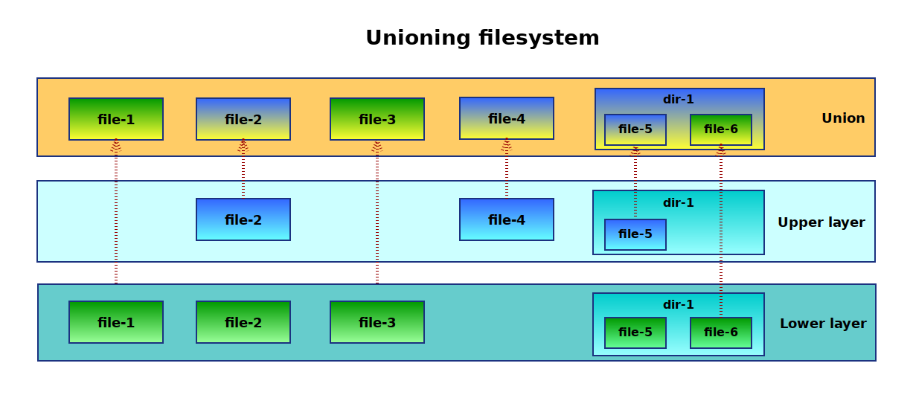

Images and Containers#
This section covers how the container is created from an image.
What is an image?#
Container images are basically just tarballs or tarballs of tarballs. The tarball contains files and directories a very simple way how to inspect it is to export it using docker.
-
Spin the desired container up, in this case a base debian image.
$ docker run -ti debian bash -
In other terminal, find the container and export it.
$ docker ps CONTAINER ID IMAGE COMMAND f222a193be90 debian "bash" $ docker export f222a193be90 > deian.tar -
Stop the container
root@f222a193be90:/> exit -
Untar the image into directory.
$ mkdir debain-image $ tar -xf debian.tar -C debian-image -
Inspect what's inside. It looks like a usual GNU/Linux filesystem layout.
$ ls -la debian-image total 92 drwxr-xr-x 21 wvi wvi 4096 23.04.2017 11:07 ./ drwxrwxrwx 113 wvi wvi 12288 23.04.2017 11:07 ../ drwxr-xr-x 2 wvi wvi 4096 21.03.2017 00:29 bin/ drwxr-xr-x 2 wvi wvi 4096 28.12.2016 18:42 boot/ drwxr-xr-x 4 wvi wvi 4096 23.04.2017 11:00 dev/ drwxr-xr-x 41 wvi wvi 4096 23.04.2017 11:00 etc/ drwxr-xr-x 2 wvi wvi 4096 28.12.2016 18:42 home/ drwxr-xr-x 9 wvi wvi 4096 27.11.2014 20:59 lib/ drwxr-xr-x 2 wvi wvi 4096 21.03.2017 00:27 lib64/ drwxr-xr-x 2 wvi wvi 4096 21.03.2017 00:26 media/ drwxr-xr-x 2 wvi wvi 4096 21.03.2017 00:26 mnt/ drwxr-xr-x 2 wvi wvi 4096 21.03.2017 00:26 opt/ drwxr-xr-x 2 wvi wvi 4096 21.03.2017 00:29 proc/ drwx------ 2 wvi wvi 4096 21.03.2017 00:26 root/ drwxr-xr-x 3 wvi wvi 4096 21.03.2017 00:26 run/ drwxr-xr-x 2 wvi wvi 4096 21.03.2017 00:29 sbin/ drwxr-xr-x 2 wvi wvi 4096 21.03.2017 00:26 srv/ drwxr-xr-x 2 wvi wvi 4096 06.04.2015 20:44 sys/ drwxr-xr-x 2 wvi wvi 4096 21.03.2017 00:29 tmp/ drwxr-xr-x 10 wvi wvi 4096 21.03.2017 00:26 usr/ drwxr-xr-x 11 wvi wvi 4096 21.03.2017 00:26 var/ -rwxr-xr-x 1 wvi wvi 0 23.04.2017 11:00 .dockerenv*
Creating the image#
To create an image for the diyC the easiest is to export the docker image.
Generally for containers there are many other ways how to create an image but it is out of scope of this project so here is just a few pointers.
-
Statically linked programs where you need just that one binary nothing else so something along those lines should suffice. That's for example what you can do with Go programs.
$ mkdir image $ cp <my-statically-linked-binary> image $ tar -cf image.tar image -
https://buildroot.org/ is a toolbox for creating embedded linux systems but you can very easily create a custom installation which will be very small. See a great talk on this topic from Brian "Redbeard" Harrington from coreOS.
-
Get your filesystem layout and copy files needed. you can use package managers like
dnf,yum,debootsrapetc. and tar the structure up.
Easy way to verify that the tarball makes sense is to import it to docker
using docker import tarball.tar.
How a container is created from an image?#
The main magic is layers becaue containers are like Ogres. The container's filesystem is usually made of at least two layers many times there are more layers involved but that doesn't change the core concept where one layer is the image and the other is a writeable temporary directory for the container to write files so that the image remains immutable. To achieve such behaviour you need a so called union mount which basically mounts a new filesystem combining two or more directories/filesystems together into one.

Above: Simplified unioning filesystem scheme
Such a unified filesystem is then mounted under some temp working directory and in the container it is changed to be the root filesystem using the pivot_root syscall. pivot_root is almost like a chroot but you get to keep access to the original old root so you can for example copy some configuration files to the new root.
Code
See the implementation in diy.c:304-330
Very similar behaviour is also possible using completely different approaches, i.e utilizing subvolumes and snapshots of btrfs or using devicemapper. Docker uses devicemapper approach on many systems by default and has a very good description of the devicemapper approach.
Unioning filesystems in Linux#
Historically there were couple of options on Linux but only one of them ended up in the mainline kernel. Describing the history and details is out of the scope but the main ones are :
Today the easisest option is to use overlayfs filesystem because it
was merged to mainline kernel in version 3.18. It is actually called
overlay since the merge. To check if you are able to use it see
/proc/filesystems file (man 5 filesystems).
overlay kernel module
Very often it does not show up in the /proc/filesystems because
it is loaded only if it is used so try modprobe overlay to load the kernel module.
Using overlay filesystem#
In the overlayfs there are two layers, lowerdir which is
always read only and upperdir which is writeable. You can actually have
more lowerdir directories which are all read only as any changes are
always stored in the upperdir. It can be used in many ways
(i.e. Live CDs) and is not specific to containers.
You can give it a try yourself easily from a command line.
Overlay mount(8) options.
# mount -t overlay overlay -o lowerdir=/lower1:/lower2,upperdir=/upper,workdir=/work /merged
workdir
The workdir parameter must be on the same filesystem as the
uppperdir directory and it is used for certain atomic
operations. lowerdir can be on a different filesystem though.
# In tmp create the needed directory structure
$ mkdir /tmp/lower /tmp/upper /tmp/workdir /tmp/merged
# and mount an overlay fs
$ sudo mount -t overlay -o \
lowerdir=/tmp/lower,\
upperdir=/tmp/upper,\
workdir=/tmp/workdir \
none /tmp/merged
If you play around creating/writing/deleting files and directories in
the lower, upper and merged you can observe the following.
Observations#
-
If there are directories in both
loweranduppertheir content is merged. -
Files created in the
lowerorupperdirectory are visible in themerged. -
Any files created in the merged are actually created in the
upper. -
Writing to existing files appears again only in
uppereven if the file was originally inlower, the file is copied up. -
Deleteing a file or directory in
mergedthat was in thelower, removes it from merged but notlower. It creates a so called "whiteout" file/directory in theupper.
Conatiner filesystem is created in the same fashion, image is the
lowerdir and container specific files are in the upperdir. Inside the
container you see the merged.